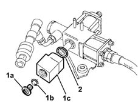
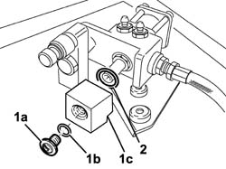

1044E16 SOLENOID COIL ON CNG SYSTEM PRESSURE REDUCTION UNIT R R WITH PRESSURE REDUCTION UNIT REMOVED
- Path
- Procedures > 10 ENGINE UNIT > 1044 FUEL CIRCUIT PUMP/S AND DEVICES > 1044E GAS PRESSURE CONTROL DEVICE > 1044E16 SOLENOID COIL ON CNG SYSTEM PRESSURE REDUCTION UNIT R R WITH PRESSURE REDUCTION UNIT REMOVED
- Kind
- repair procedure (removal / refitting; the operation number is the code)
- Applies to
- engines: 1.6 16v; all production periods
- Interactive page
- https://sloeber94.github.io/elrnDB-fMltpl/en/#/2891477
Applies to: engines: 1.6 16v; production: fino a 05/04; only with equipment: BIPOWER and BLUPOWER
 Removing
Removing
 Refitting
Refitting1. Undo bolt-plug (1a) complete with sealing ring. (1b) securing solenoid coil (1c).
2. Withdraw the solenoid coil and retaining ring.

Applies to: engines: 1.6 16v; production: fino a 05/04; only with equipment: BIPOWER and BLUPOWER
Refitting
RemovingReposition the solenoid coil. on the coil carrier lock-ring.
Secure the solenoid coil to the lock-ring using the bolt-plug and tighten the bolt-plug to the recommended torque.
Fastening | Component | Ø | Value (daNm) | |
|---|---|---|---|---|
- | Bolt | PRESSURE REDUCTION UNIT SOLENOID COIL | - | 1.15 ÷ 1.35 |
Check the seal of the relevant parts during disassembly.
Applies to: engines: 1.6 16v; production: da 06/04; only with equipment: BIPOWER
Removing
Refitting1. Undo the bolt-plug (1a) complete with sealing right (1b) for securing solenoid coil (1c).
2. Withdraw the solenoid coil and retaining ring.

Applies to: engines: 1.6 16v; production: da 06/04; only with equipment: BIPOWER
Refitting
RemovingReposition the solenoid coil in the coil carrier lock-ring.
Secure the solenoid coil to the lock-ring by means of a bolt-plug and tighten the bolt-plug to the specified torque.
Fastening | Component | Ø | Value (daNm) | |
|---|---|---|---|---|
- | Bolt | PRESSURE REDUCTION UNIT SOLENOID COIL | - | 1.15 ÷ 1.35 |
Check the seal of the relevant components during disassembly.